Documentacio
|2 ASIX: - Tema |
| - |
|PRACTICA // // |
| Nombre: Nombre professor | Jaime Climent Cardona Espe | Grupo: 2 ASIX Grupo: 2 ASIX |
|---|---|---|
EXAMEN IAW 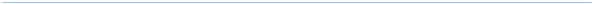
Accedir al teu server per nom de domini
Primer pas tindre instalat nginx que es el servidor web
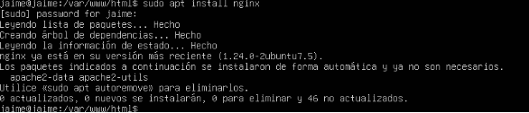
Dins de /var/www/html hi ha un index per defecte de nginx, aquest es el que es mostra cuando posem url en el navegador
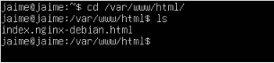
Revisar si el /etc/nginx/sites-available, el root redirigeix a /var/www/html i veure si esta fet l’enllaç simbòlic
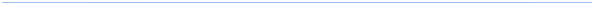
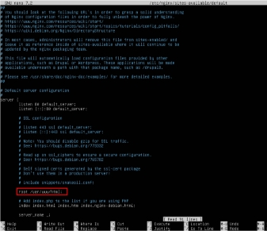
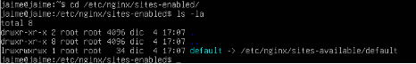
16/09/24 Página 1 de 7**
| 2ASIX: - Tema |
|---|
| PRACTICA // - Jaime Climent Cardona |
Indica com podria accedir a la url amb el meu nom
Desde un client entrem al ficher /etc/hosts i anyadim la següent línia
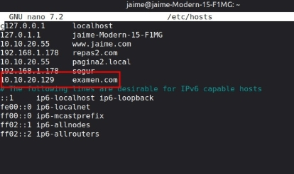
I ara en el navegador posem http://examen.com i deuria de funcionar tal que així
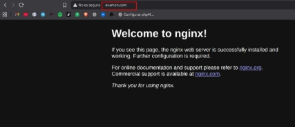
S’hauria de accedir amb la url: http://examen.com en este cas Implantació 1
Creem fitxer dins de /var/www/html/ nomenat nota.html
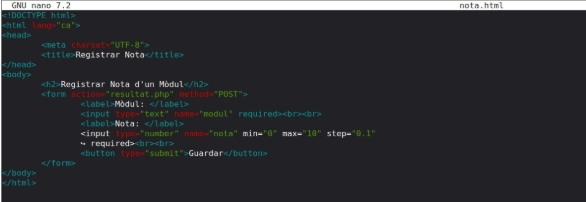
| 2ASIX: - Tema |
|---|
| PRACTICA // - Jaime Climent Cardona |
Creem el fitxer resultat perq es redirisxca desde nota.html
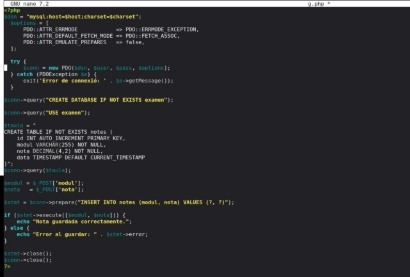
Mostrem el nota.html en el navegador
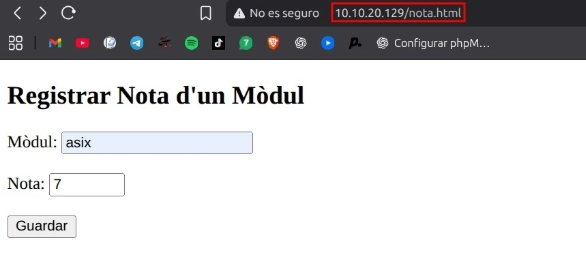
| 2ASIX: - Tema |
|---|
| PRACTICA // - Jaime Climent Cardona |
Implantació 2
Crea una base de dades per a guardar la configuració i les dades de dolibarr Crea un usuari amb privilegis per a gestionar la base de dades
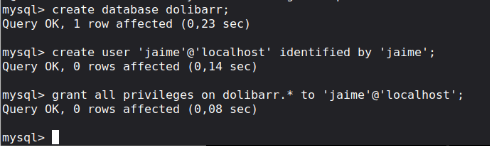
Dolibarr necesita les extension PHP:
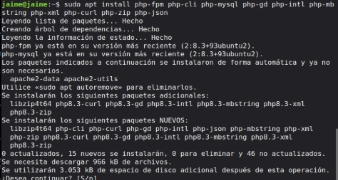
Descarreguem el .zip i fem un rsync per a pasarlo al nostre servidor
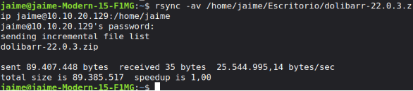
| 2ASIX: - Tema |
|---|
| PRACTICA // - Jaime Climent Cardona |
Obtenim el arxiu de la aplicació
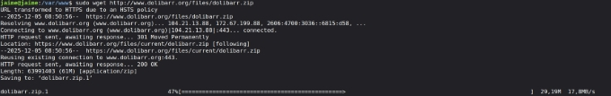
Descomprimim el arxiu
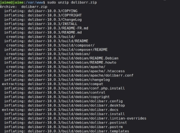
Li cambiem el nom la arxiu i li donem els permisos adequats
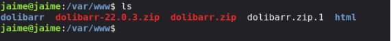
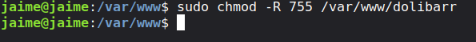
Creem arxiu conf.php i estbalim permisos
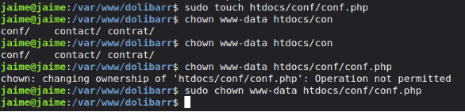
Creem carpeta documents i establim permisos
| 2ASIX: - Tema |
|---|
| PRACTICA // - Jaime Climent Cardona |
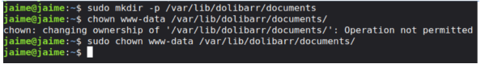
Servidor Nginx
Creem un nou fitxer en /etc/nginx/sites-available
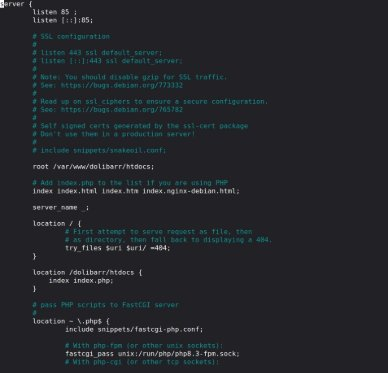
Activem el lloc
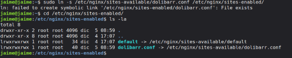
Comprobem que esta correcte i reiniciem
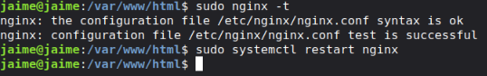
| 2ASIX: - Tema |
|---|
| PRACTICA // - Jaime Climent Cardona |
Página 8 de 8**